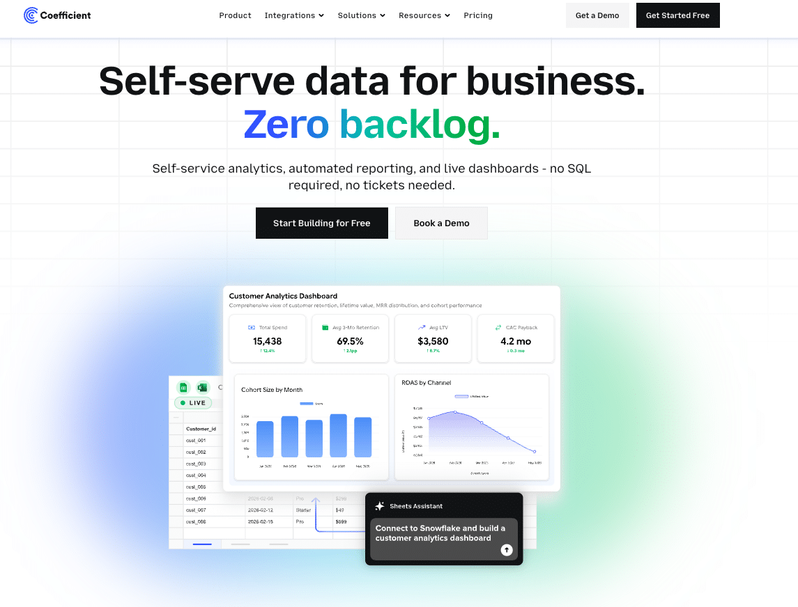

AI Playbook · Stakeholder Communication & Reporting · 2026
Communication
Toolkit
Prompt templates, tool picks, and a clear split between what AI compresses and what only humans can do — for BAs, FAs, and POs.
AI notetakers are a reliable BA stack component. The differentiator is not transcription quality — it is what happens to action items after the call ends. [2]
| Tool | Free tier | Best for | Key follow-up feature |
|---|---|---|---|
| Unlimited Zoom | Individual contributors | 30-sec post-meeting summaries; 95% claimed accuracy [2] | |
| 800 min storage | Teams needing CRM sync | 60+ languages; pushes action items to Salesforce/Jira [18] | |
| Limited history | Privacy-conscious (Mac) | No bot in the room — captures via system audio [2] | |
| Unlimited (3-mo del.) | Multi-platform teams | Timestamp clips for async stakeholder review [2] |
→ Feed directly into backlog refinement — no re-read of the full transcript needed.
3–5 hrs/week (≈ 200 hrs/year) writing reports stakeholders skim in under two minutes. [13] AI compresses the cycle to under 30 minutes.
Pattern: define role → audience → constraints → output format. [10]
Data-connected path: ClickUp Brain, Monday.com AI, and Taskade pull directly from project boards to generate narrative reports on schedule — no copy-paste, no manual aggregation. [14]
The single highest-leverage AI use case for BAs and FAs: the same doc rewritten for developer, project sponsor, and C-suite in completely different registers. [1]
Human judgment fills in the accountability gaps, escalation paths, and organisational politics that AI cannot see. [9]
By 2026, every major BI platform has an AI layer. The shift: from "here is the chart" to "retention dropped 10% on iOS in California — here is why." [7] Role-based views mean executives see KPI summaries; analysts retain raw data. [17]

Scrum's built-in touchpoints remain the most reliable stakeholder mechanism. [16] Core principle: "do good and talk about it" — convert technical accomplishments into narratives stakeholders actually value. [5]
A structured plan covers: stakeholder identification, needs analysis, objectives, channel selection, cadence, and ownership. [6]
Roadmap by audience: executives see themes, engineers see tasks and deadlines. Most roadmap tools (ProductPlan, Aha!, Linear) generate audience-specific exports; the AI layer is prompting the right abstraction level. [4]
Effective stakeholder communication is two-way: invest in understanding your audience before talking, and treat incoming feedback as structured input. [15]
What AI handles vs. what stays human
- Transcription and meeting summaries
- Status report drafting and formatting
- Metric alerts and anomaly detection
- Audience rewrites (exec / tech / sponsor)
- RACI matrix first drafts
- Sprint Review agenda generation
- Sentiment trend detection from logs
- Reading the room and body language
- Escalation judgment calls
- Trust-building over time
- Navigating organisational politics
- Final accountability sign-off
- Facilitation and conflict resolution
- Acting on relationship signals
The highest-value BA/PO work in 2026 is framing the right questions, interpreting ambiguous signals, and translating insights across organisational boundaries. AI eliminates the mechanical overhead to make room for exactly that. [1]